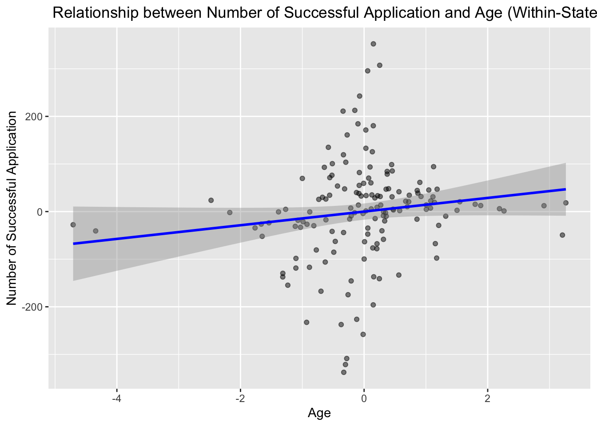

Note: Experiment data is from 2019-2021, while census data is from 2019-2024. The following code aggregate application level data to the state level and merge it with the census data to calculate the proportion of applications by state. The analysis aims to provide insights into the distribution of applications across states and how it relates to the population size.
# for census_data_2 only keep year column 13 and row 6 onwardscensus_data_2 <- census_data_2 %>%select(1, 13) %>%slice(6:56) # rename first column to states colnames(census_data_2)[1] <-"states"# delete . in front of state namescensus_data_2 <- census_data_2 %>%filter(grepl("^\\.", states)) %>%mutate(states =gsub("^\\.", "", states))
Data Background and Context
The dataset originates from the landmark study “Systemic Discrimination Among Large U.S. Employers” (Kline, Rose, and Walters, 2022).
Research Questions: The study explores whether discrimination is endemic to particular firms, investigates firm-level heterogeneity in callback rates, and considers the potential impact of industry, geographic location, and other structural factors.
The census data was retrieved from the United States Census Bureau at this link: https://www.census.gov/data/tables/time-series/demo/popest/2020s-state-total.html
Check distribution of submissions by state
The following code creates a bar plot that orders states by the count of submissions. This visualization helps identify geographic patterns in the data, which may be related to regional hiring practices or other local factors.
data %>%count(state) %>%arrange(desc(n)) %>%ggplot(aes(y =reorder(state, n), x = n)) +geom_bar(stat ="identity", fill ="skyblue", color ="black") +labs(title ="Distribution of States (Ordered by Count)",y ="State",x ="Count" )
aggregate experiment data by state, year, and race
visualizing the relationship between callback rate and age
merged_data %>%ggplot(aes(x = age, y = callback_rate)) +geom_point() +geom_smooth(method ="glm", method.args =list(family =binomial(link ="logit")), se =TRUE) +labs(title ="Relationship between Callback Rate and Age (Logit))",y ="Callback Rate",x ="Age" )
`geom_smooth()` using formula = 'y ~ x'

two-way fixed effects model to estimate the relationship between callback rate and age
merged_data <- merged_data %>%mutate(success = callback_rate * num_sub)# here we convert the callback rate to the number of callbacks for the fixed effects linear model# within variations (year + state fixed effects)mod_2 <-feols(success ~ age | state + year, data = merged_data)summary(mod_2)
visualizing the relationship between callback rate and age under fixed effect
# demean age: mod_age <-feols(age ~1| state + year, data = merged_data)merged_data <- merged_data %>%mutate(age_demeaned =resid(mod_age))# demean success:mod_rate <-feols(success ~1| state + year, data = merged_data)merged_data <- merged_data %>%mutate(success_demeaned =resid(mod_rate))ggplot(merged_data, aes(x = age_demeaned, y = success_demeaned)) +geom_point(alpha =0.5) +geom_smooth(method ="lm", color ="blue") +labs(title =" Relationship between Number of Successful Application and Age (Demeaned by State and Year)",x ="Age",y ="Number of Successful Application" )